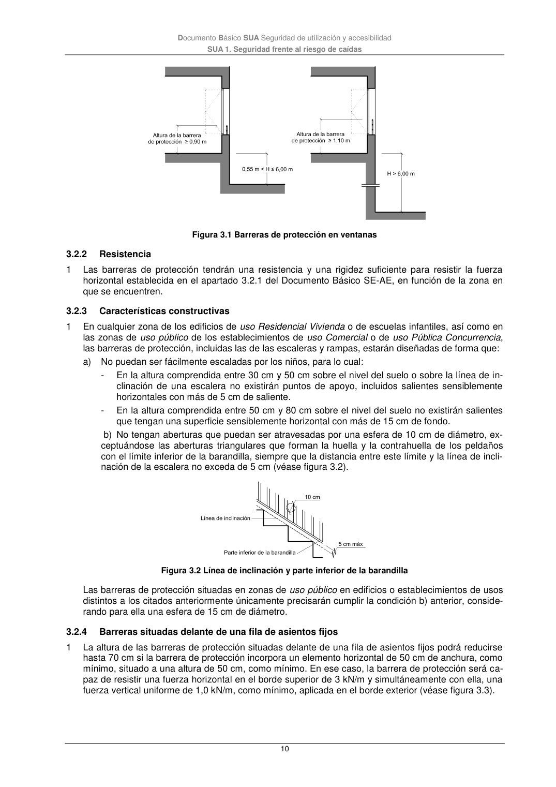

DB-SUA · 3.2.2 Resistencia · 3.2.3 Características constructivas · 3.2.4 Barreras situadas delante de una fila de asientos fijos · versión 2022-06-14
SHA256: 3cfb5bbb135e8f02faebd8b844e03e8947994c18d4c9e675a7d2aa37d1cd5958 · página física 10 de 47 · métodos de encabezado
solo si están cotejados.
Formatos: Markdown · JSON de bloques · PDF p. 10 · imagen PNG
Documento Básico SUA Seguridad de utilización y accesibilidad SUA 1. Seguridad frente al riesgo de caídas 10 Figura 3.1 Barreras de protección en ventanas 3.2.2 Resistencia 1 Las barreras de protección tendrán una resistencia y una rigidez suficiente para resistir la fuerza horizontal establecida en el apartado 3.2.1 del Documento Básico SE-AE, en función de la zona en que se encuentren. 3.2.3 Características constructivas 1 En cualquier zona de los edificios de uso Residencial Vivienda o de escuelas infantiles, así como en las zonas de uso público de los establecimientos de uso Comercial o de uso Pública Concurrencia, las barreras de protección, incluidas las de las escaleras y rampas, estarán diseñadas de forma que: a) No puedan ser fácilmente escaladas por los niños, para lo cual: - En la altura comprendida entre 30 cm y 50 cm sobre el nivel del suelo o sobre la línea de in- clinación de una escalera no existirán puntos de apoyo, incluidos salientes sensiblemente horizontales con más de 5 cm de saliente. - En la altura comprendida entre 50 cm y 80 cm sobre el nivel del suelo no existirán salientes que tengan una superficie sensiblemente horizontal con más de 15 cm de fondo. b) No tengan aberturas que puedan ser atravesadas por una esfera de 10 cm de diámetro, ex- ceptuándose las aberturas triangulares que forman la huella y la contrahuella de los peldaños con el límite inferior de la barandilla, siempre que la distancia entre este límite y la línea de incli- nación de la escalera no exceda de 5 cm (véase figura 3.2). Figura 3.2 Línea de inclinación y parte inferior de la barandilla Las barreras de protección situadas en zonas de uso público en edificios o establecimientos de usos distintos a los citados anteriormente únicamente precisarán cumplir la condición b) anterior, conside- rando para ella una esfera de 15 cm de diámetro. 3.2.4 Barreras situadas delante de una fila de asientos fijos 1 La altura de las barreras de protección situadas delante de una fila de asientos fijos podrá reducirse hasta 70 cm si la barrera de protección incorpora un elemento horizontal de 50 cm de anchura, como mínimo, situado a una altura de 50 cm, como mínimo. En ese caso, la barrera de protección será ca- paz de resistir una fuerza horizontal en el borde superior de 3 kN/m y simultáneamente con ella, una fuerza vertical uniforme de 1,0 kN/m, como mínimo, aplicada en el borde exterior (véase figura 3.3).
